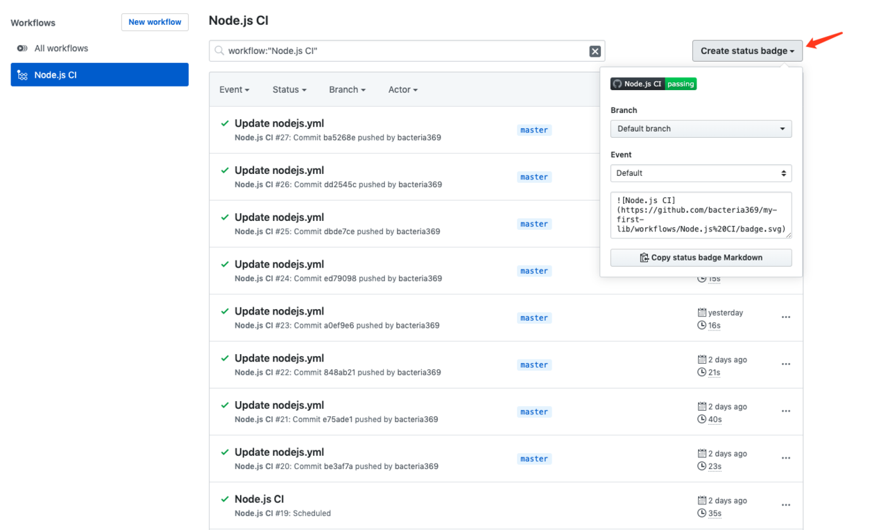
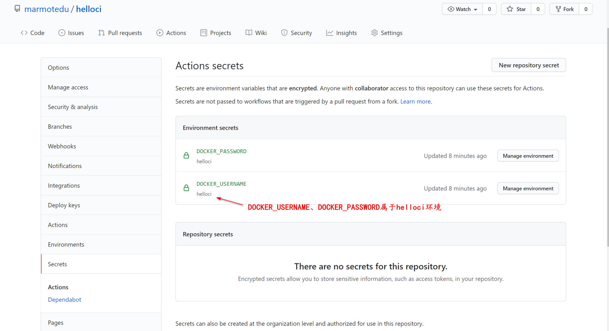
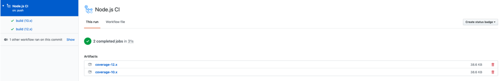
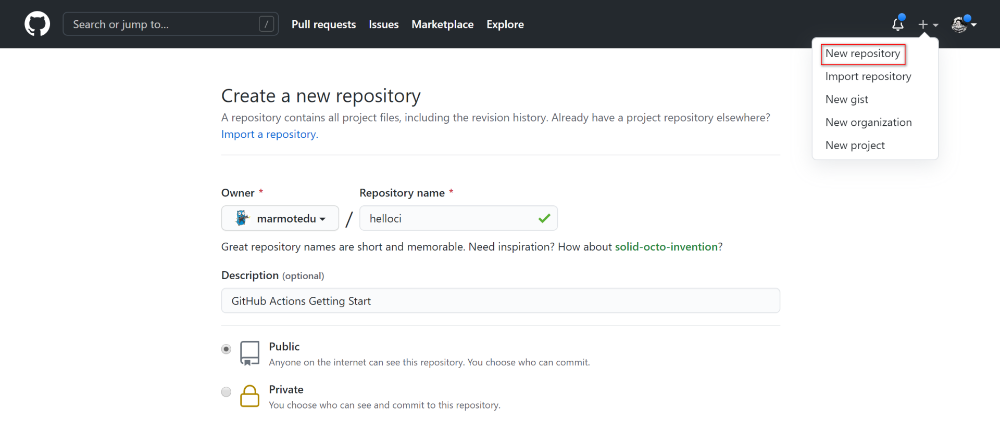
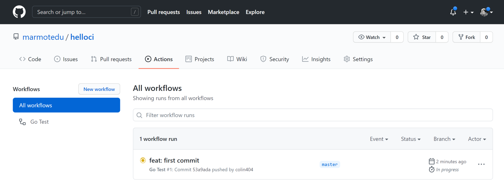
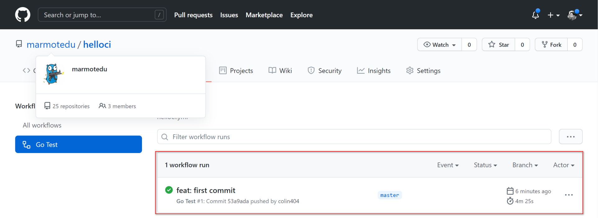
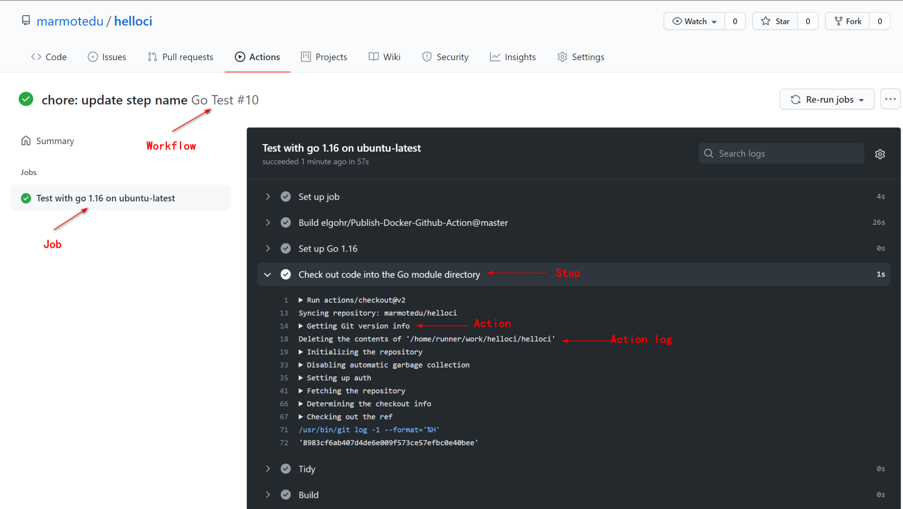
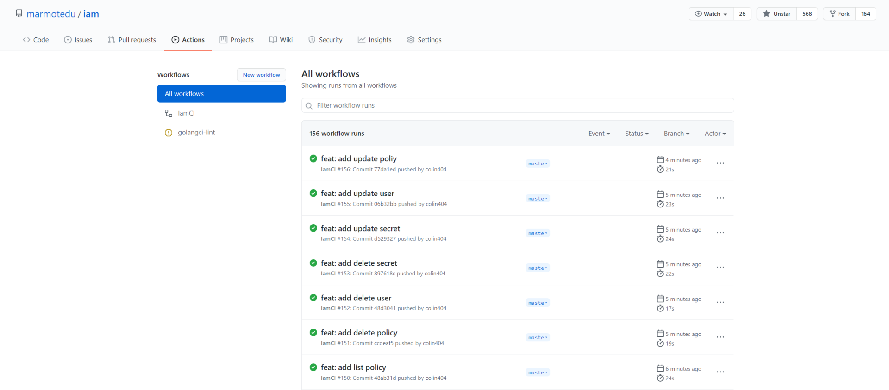
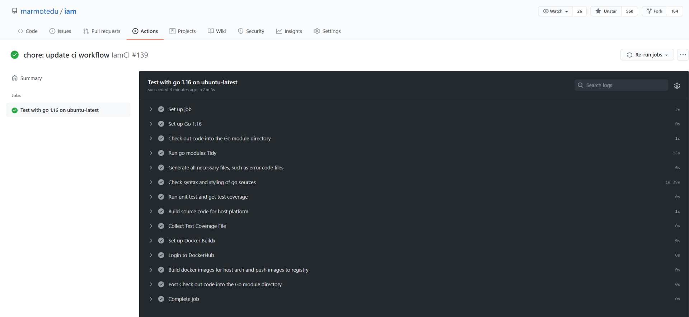

- 00 开篇词 从 0 开始搭建一个企业级 Go 应用.md
- 01 IAM系统概述：我们要实现什么样的 Go 项目？.md
- 02 环境准备：如何安装和配置一个基本的 Go 开发环境？.md
- 03 项目部署：如何快速部署 IAM 系统？.md
- 04 规范设计（上）：项目开发杂乱无章，如何规范？.md
- 05 规范设计（下）：commit 信息风格迥异、难以阅读，如何规范？.md
- 06 目录结构设计：如何组织一个可维护、可扩展的代码目录？.md
- 07 工作流设计：如何设计合理的多人开发模式？.md
- 08 研发流程设计（上）：如何设计 Go 项目的开发流程？.md
- 09 研发流程设计（下）：如何管理应用的生命周期？.md
- 10 设计方法：怎么写出优雅的 Go 项目？.md
- 11 设计模式：Go常用设计模式概述.md
- 12 API 风格（上）：如何设计RESTful API？.md
- 13 API 风格（下）：RPC API介绍.md
- 14 项目管理：如何编写高质量的Makefile？.md
- 15 研发流程实战：IAM项目是如何进行研发流程管理的？.md
- 16 代码检查：如何进行静态代码检查？.md
- 17 API 文档：如何生成 Swagger API 文档 ？.md
- 18 错误处理（上）：如何设计一套科学的错误码？.md
- 19 错误处理（下）：如何设计错误包？.md
- 20 日志处理（上）：如何设计日志包并记录日志？.md
- 21 日志处理（下）：手把手教你从 0 编写一个日志包.md
- 22 应用构建三剑客：Pflag、Viper、Cobra 核心功能介绍.md
- 23 应用构建实战：如何构建一个优秀的企业应用框架？.md
- 24 Web 服务：Web 服务核心功能有哪些，如何实现？.md
- 25 认证机制：应用程序如何进行访问认证？.md
- 26 IAM项目是如何设计和实现访问认证功能的？.md
- 27 权限模型：5大权限模型是如何进行资源授权的？.md
- 28 控制流（上）：通过iam-apiserver设计，看Web服务的构建.md
- 29 控制流（下）：iam-apiserver服务核心功能实现讲解.md
- 30 ORM：CURD 神器 GORM 包介绍及实战.md
- 31 数据流：通过iam-authz-server设计，看数据流服务的设计.md
- 32 数据处理：如何高效处理应用程序产生的数据？.md
- 33 SDK 设计（上）：如何设计出一个优秀的 Go SDK？.md
- 34 SDK 设计（下）：IAM项目Go SDK设计和实现.md
- 35 效率神器：如何设计和实现一个命令行客户端工具？.md
- 36 代码测试（上）：如何编写 Go 语言单元测试和性能测试用例？.md
- 37 代码测试（下）：Go 语言其他测试类型及 IAM 测试介绍.md
- 38 性能分析（上）：如何分析 Go 语言代码的性能？.md
- 39 性能分析（下）：API Server性能测试和调优实战.md
- 40 软件部署实战（上）：部署方案及负载均衡、高可用组件介绍.md
- 41 软件部署实战（中）：IAM 系统生产环境部署实战.md
- 42 软件部署实战（下）：IAM系统安全加固、水平扩缩容实战.md
- 43 技术演进（上）：虚拟化技术演进之路.md
- 44 技术演进（下）：软件架构和应用生命周期技术演进之路.md
- 45 基于Kubernetes的云原生架构设计.md
- 46 如何制作Docker镜像？.md
- 47 如何编写Kubernetes资源定义文件？.md
- 48 IAM 容器化部署实战.md
- 49 服务编排（上）：Helm服务编排基础知识.md
- 50 服务编排（下）：基于Helm的服务编排部署实战.md
- 51 基于 GitHub Actions 的 CI 实战.md
- 特别放送 Go Modules依赖包管理全讲.md
- 特别放送 Go Modules实战.md
- 特别放送 IAM排障指南.md
- 特别放送 分布式作业系统设计和实现.md
- 特别放送 给你一份Go项目中最常用的Makefile核心语法.md
- 特别放送 给你一份清晰、可直接套用的Go编码规范.md
- 直播加餐 如何从小白进阶成 Go 语言专家？.md
- 结束语 如何让自己的 Go 研发之路走得更远？.md
51 基于 GitHub Actions 的 CI 实战
你好，我是孔令飞。这是本专栏正文的最后一讲了，恭喜你坚持到了最后！
在Go项目开发中，我们要频繁地执行静态代码检查、测试、编译、构建等操作。如果每一步我们都手动执行，效率低不说，还容易出错。所以，我们通常借助CI系统来自动化执行这些操作。
当前业界有很多优秀的CI系统可供选择，例如 CircleCI、TravisCI、Jenkins、CODING、GitHub Actions 等。这些系统在设计上大同小异，为了减少你的学习成本，我选择了相对来说容易实践的GitHub Actions，来给你展示如何通过CI来让工作自动化。
这一讲，我会先介绍下GitHub Actions及其用法，再向你展示一个CI示例，最后给你演示下IAM是如何构建CI任务的。
GitHub Actions的基本用法
GitHub Actions是GitHub为托管在github.com站点的项目提供的持续集成服务，于2018年10月推出。
GitHub Actions具有以下功能特性：
- 提供原子的actions配置和组合actions的workflow配置两种能力。
- 全局配置基于YAML配置，兼容主流CI/CD工具配置。
- Actions/Workflows基于事件触发，包括Event restrictions、Webhook events、Scheduled events、External events。
- 提供可供运行的托管容器服务，包括Docker、VM，可运行Linux、macOS、Windows主流系统。
- 提供主流语言的支持，包括Node.js、Python、Java、Ruby、PHP、Go、Rust、.NET。
- 提供实时日志流程，方便调试。
- 提供平台内置的Actions与第三方提供的Actions，开箱即用。
GitHub Actions的基本概念
在构建持续集成任务时，我们会在任务中心完成各种操作，比如克隆代码、编译代码、运行单元测试、构建和发布镜像等。GitHub把这些操作称为Actions。
Actions在很多项目中是可以共享的，GitHub允许开发者将这些可共享的Actions上传到GitHub的官方Actions市场，开发者在Actions市场中可以搜索到他人提交的 Actions。另外，还有一个 awesome actions 的仓库，里面也有不少的Action可供开发者使用。如果你需要某个 Action，不必自己写复杂的脚本，直接引用他人写好的 Action 即可。整个持续集成过程，就变成了一个 Actions 的组合。
Action其实是一个独立的脚本，可以将Action存放在GitHub代码仓库中，通过<userName>/<repoName>的语法引用 Action。例如，actions/checkout@v2表示https://github.com/actions/checkout这个仓库，tag是v2。actions/checkout@v2也代表一个 Action，作用是安装 Go编译环境。GitHub 官方的 Actions 都放在 github.com/actions 里面。
GitHub Actions 有一些自己的术语，下面我来介绍下。
- workflow（工作流程）：一个
.yml文件对应一个 workflow，也就是一次持续集成。一个 GitHub 仓库可以包含多个 workflow，只要是在.github/workflow目录下的.yml文件都会被 GitHub 执行。 - job（任务）：一个 workflow 由一个或多个 job 构成，每个 job 代表一个持续集成任务。
- step（步骤）：每个 job 由多个 step 构成，一步步完成。
- action（动作）：每个 step 可以依次执行一个或多个命令（action）。
- on：一个 workflow 的触发条件，决定了当前的 workflow 在什么时候被执行。
workflow文件介绍
GitHub Actions 配置文件存放在代码仓库的.github/workflows目录下，文件后缀为.yml，支持创建多个文件，文件名可以任意取，比如iam.yml。GitHub 只要发现.github/workflows目录里面有.yml文件，就会自动运行该文件，如果运行过程中存在问题，会以邮件的形式通知到你。
workflow 文件的配置字段非常多，如果你想详细了解，可以查看官方文档。这里，我来介绍一些基本的配置字段。
name
name字段是 workflow 的名称。如果省略该字段，默认为当前 workflow 的文件名。
name: GitHub Actions Demo
on
on字段指定触发 workflow 的条件，通常是某些事件。
on: push
上面的配置意思是，push事件触发 workflow。on字段也可以是事件的数组，例如:
on: [push, pull_request]
上面的配置意思是，push事件或pull_request事件都可以触发 workflow。
想了解完整的事件列表，你可以查看官方文档。除了代码库事件，GitHub Actions 也支持外部事件触发，或者定时运行。
on.<push|pull_request>.<tags|branches>
指定触发事件时，我们可以限定分支或标签。
on:
push:
branches:
- master
上面的配置指定，只有master分支发生push事件时，才会触发 workflow。
jobs.<job_id>.name
workflow 文件的主体是jobs字段，表示要执行的一项或多项任务。
jobs字段里面，需要写出每一项任务的job_id，具体名称自定义。job_id里面的name字段是任务的说明。
jobs:
my_first_job:
name: My first job
my_second_job:
name: My second job
上面的代码中，jobs字段包含两项任务，job_id分别是my_first_job和my_second_job。
jobs.<job_id>.needs
needs字段指定当前任务的依赖关系，即运行顺序。
jobs:
job1:
job2:
needs: job1
job3:
needs: [job1, job2]
上面的代码中，job1必须先于job2完成，而job3等待job1和job2完成后才能运行。因此，这个 workflow 的运行顺序为：job1、job2、job3。
jobs.<job_id>.runs-on
runs-on字段指定运行所需要的虚拟机环境，它是必填字段。目前可用的虚拟机如下：
- ubuntu-latest、ubuntu-18.04或ubuntu-16.04。
- windows-latest、windows-2019或windows-2016。
- macOS-latest或macOS-10.14。
下面的配置指定虚拟机环境为ubuntu-18.04。
runs-on: ubuntu-18.04
jobs.<job_id>.steps
steps字段指定每个 Job 的运行步骤，可以包含一个或多个步骤。每个步骤都可以指定下面三个字段。
jobs.<job_id>.steps.name：步骤名称。jobs.<job_id>.steps.run：该步骤运行的命令或者 action。jobs.<job_id>.steps.env：该步骤所需的环境变量。
下面是一个完整的 workflow 文件的范例：
name: Greeting from Mona
on: push
jobs:
my-job:
name: My Job
runs-on: ubuntu-latest
steps:
- name: Print a greeting
env:
MY_VAR: Hello! My name is
FIRST_NAME: Lingfei
LAST_NAME: Kong
run: |
echo $MY_VAR $FIRST_NAME $LAST_NAME.
上面的代码中，steps字段只包括一个步骤。该步骤先注入三个环境变量，然后执行一条 Bash 命令。
uses
uses 可以引用别人已经创建的 actions，就是上面说的 actions 市场中的 actions。引用格式为userName/repoName@verison，例如uses: actions/setup-go@v1。
with
with 指定actions的输入参数。每个输入参数都是一个键/值对。输入参数被设置为环境变量，该变量的前缀为 INPUT_，并转换为大写。
这里举个例子：我们定义 hello_world 操作所定义的三个输入参数（first_name、middle_name 和 last_name），这些输入变量将被 hello-world 操作作为 INPUT_FIRST_NAME、INPUT_MIDDLE_NAME 和 INPUT_LAST_NAME 环境变量使用。
jobs:
my_first_job:
steps:
- name: My first step
uses: actions/hello_world@master
with:
first_name: Lingfei
middle_name: Go
last_name: Kong
run
run指定执行的命令。可以有多个命令，例如：
- name: Build
run: |
go mod tidy
go build -v -o helloci .
id
id是step的唯一标识。
GitHub Actions的进阶用法
上面，我介绍了GitHub Actions的一些基本知识，这里我再介绍下GitHub Actions的进阶用法。
为工作流加一个Badge
在action的面板中，点击Create status badge就可以复制Badge的Markdown内容到README.md中。
之后，我们就可以直接在README.md中看到当前的构建结果：

使用构建矩阵
如果我们想在多个系统或者多个语言版本上测试构建，就需要设置构建矩阵。例如，我们想在多个操作系统、多个Go版本下跑测试，可以使用如下workflow配置：
name: Go Test
on: [push, pull_request]
jobs:
helloci-build:
name: Test with go ${{ matrix.go_version }} on ${{ matrix.os }}
runs-on: ${{ matrix.os }}
strategy:
matrix:
go_version: [1.15, 1.16]
os: [ubuntu-latest, macOS-latest]
steps:
- name: Set up Go ${{ matrix.go_version }}
uses: actions/setup-go@v2
with:
go-version: ${{ matrix.go_version }}
id: go
上面的workflow配置，通过strategy.matrix配置了该工作流程运行的环境矩阵（格式为go_version.os）：ubuntu-latest.1.15、ubuntu-latest.1.16、macOS-latest.1.15、macOS-latest.1.16。也就是说，会在4台不同配置的服务器上执行该workflow。
使用Secrets
在构建过程中，我们可能需要用到ssh或者token等敏感数据，而我们不希望这些数据直接暴露在仓库中，此时就可以使用secrets。
我们在对应项目中选择Settings-> Secrets，就可以创建secret，如下图所示：

配置文件中的使用方法如下：
name: Go Test
on: [push, pull_request]
jobs:
helloci-build:
name: Test with go
runs-on: [ubuntu-latest]
environment:
name: helloci
steps:
- name: use secrets
env:
super_secret: ${{ secrets.YourSecrets }}
secret name不区分大小写，所以如果新建secret的名字是name，使用时用 secrets.name 或者 secrets.Name 都是可以的。而且，就算此时直接使用 echo 打印 secret , 控制台也只会打印出*来保护secret。-
这里要注意，你的secret是属于某一个环境变量的，所以要指明环境的名字：environment.name。上面的workflow配置中的secrets.YourSecrets属于helloci环境。
使用Artifact保存构建产物
在构建过程中，我们可能需要输出一些构建产物，比如日志文件、测试结果等。这些产物可以使用Github Actions Artifact 来存储。你可以使用action/upload-artifact 和 download-artifact 进行构建参数的相关操作。
这里我以输出Jest测试报告为例来演示下如何保存Artifact产物。Jest测试后的测试产物是coverage：
steps:
- run: npm ci
- run: npm test
- name: Collect Test Coverage File
uses: actions/[email protected]
with:
name: coverage-output
path: coverage
执行成功后，我们就能在对应action面板看到生成的Artifact：

GitHub Actions实战
上面，我介绍了GitHub Actions的用法，接下来我们就来实战下，看下使用GitHub Actions的6个具体步骤。
第一步，创建一个测试仓库。
登陆GitHub官网，点击New repository创建，如下图所示：

这里，我们创建了一个叫helloci的测试项目。
第二步，将新的仓库 clone 下来，并添加一些文件：
$ git clone https://github.com/marmotedu/helloci
你可以克隆marmotedu/helloci，并将里面的文件拷贝到你创建的项目仓库中。
第三步，创建GitHub Actions workflow配置目录：
$ mkdir -p .github/workflows
第四步，创建GitHub Actions workflow配置。
在.github/workflows目录下新建helloci.yml文件，内容如下：
name: Go Test
on: [push, pull_request]
jobs:
helloci-build:
name: Test with go ${{ matrix.go_version }} on ${{ matrix.os }}
runs-on: ${{ matrix.os }}
environment:
name: helloci
strategy:
matrix:
go_version: [1.16]
os: [ubuntu-latest]
steps:
- name: Set up Go ${{ matrix.go_version }}
uses: actions/setup-go@v2
with:
go-version: ${{ matrix.go_version }}
id: go
- name: Check out code into the Go module directory
uses: actions/checkout@v2
- name: Tidy
run: |
go mod tidy
- name: Build
run: |
go build -v -o helloci .
- name: Collect main.go file
uses: actions/[email protected]
with:
name: main-output
path: main.go
- name: Publish to Registry
uses: elgohr/Publish-Docker-GitHub-Action@master
with:
name: ccr.ccs.tencentyun.com/marmotedu/helloci:beta # docker image 的名字
username: ${{ secrets.DOCKER_USERNAME}} # 用户名
password: ${{ secrets.DOCKER_PASSWORD }} # 密码
registry: ccr.ccs.tencentyun.com # 腾讯云Registry
dockerfile: Dockerfile # 指定 Dockerfile 的位置
tag_names: true # 是否将 release 的 tag 作为 docker image 的 tag
上面的workflow文件定义了当GitHub仓库有push、pull_request事件发生时，会触发GitHub Actions工作流程，流程中定义了一个任务（Job）helloci-build，Job中包含了多个步骤（Step），每个步骤又包含一些动作（Action）。
上面的workflow配置会按顺序执行下面的6个步骤。
- 准备一个Go编译环境。
- 从marmotedu/helloci下载源码。
- 添加或删除缺失的依赖包。
- 编译Go源码。
- 上传构建产物。
- 构建镜像，并将镜像push到
ccr.ccs.tencentyun.com/marmotedu/helloci:beta。
第五步，在push代码之前，我们需要先创建DOCKER_USERNAME和DOCKER_PASSWORD secret。
其中，DOCKER_USERNAME保存腾讯云镜像服务（CCR）的用户名，DOCKER_PASSWORD保存CCR的密码。我们将这两个secret保存在helloci Environments中，如下图所示：

第六步，将项目push到GitHub，触发workflow工作流：
$ git add .
$ git push origin master
打开我们的仓库 Actions 标签页，可以发现GitHub Actions workflow正在执行：

等workflow执行完，点击 Go Test 进入构建详情页面，在详情页面能够看到我们的构建历史：

然后，选择其中一个构建记录，查看其运行详情（具体可参考chore: update step name Go Test #10）：

你可以看到，Go Test工作流程执行了6个Job，每个Job执行了下面这些自定义Step：
- Set up Go 1.16。
- Check out code into the Go module directory。
- Tidy。
- Build。
- Collect main.go file。
- Publish to Registry。
其他步骤是GitHub Actions自己添加的步骤：Setup Job、Post Check out code into the Go module directory、Complete job。点击每一个步骤，你都能看到它们的详细输出。
IAM GitHub Actions实战
接下来，我们再来看下IAM项目的GitHub Actions实战。
假设IAM项目根目录为 ${IAM_ROOT}，它的workflow配置文件为：
$ cat ${IAM_ROOT}/.github/workflows/iamci.yaml
name: IamCI
on:
push:
branchs:
- '*'
pull_request:
types: [opened, reopened]
jobs:
iamci:
name: Test with go ${{ matrix.go_version }} on ${{ matrix.os }}
runs-on: ${{ matrix.os }}
environment:
name: iamci
strategy:
matrix:
go_version: [1.16]
os: [ubuntu-latest]
steps:
- name: Set up Go ${{ matrix.go_version }}
uses: actions/setup-go@v2
with:
go-version: ${{ matrix.go_version }}
id: go
- name: Check out code into the Go module directory
uses: actions/checkout@v2
- name: Run go modules Tidy
run: |
make tidy
- name: Generate all necessary files, such as error code files
run: |
make gen
- name: Check syntax and styling of go sources
run: |
make lint
- name: Run unit test and get test coverage
run: |
make cover
- name: Build source code for host platform
run: |
make build
- name: Collect Test Coverage File
uses: actions/[email protected]
with:
name: main-output
path: _output/coverage.out
- name: Set up Docker Buildx
uses: docker/setup-buildx-action@v1
- name: Login to DockerHub
uses: docker/login-action@v1
with:
username: ${{ secrets.DOCKERHUB_USERNAME }}
password: ${{ secrets.DOCKERHUB_TOKEN }}
- name: Build docker images for host arch and push images to registry
run: |
make push
上面的workflow依次执行了以下步骤：
- 设置Go编译环境。
- 下载IAM项目源码。
- 添加/删除不需要的Go包。
- 生成所有的代码文件。
- 对IAM源码进行静态代码检查。
- 运行单元测试用例，并计算单元测试覆盖率是否达标。
- 编译代码。
- 收集构建产物
_output/coverage.out。 - 配置Docker构建环境。
- 登陆DockerHub。
- 构建Docker镜像，并push到DockerHub。
IamCI workflow运行历史如下图所示：

IamCI workflow的其中一次工作流程运行结果如下图所示：

总结
在Go项目开发中，我们需要通过CI任务来将需要频繁操作的任务自动化，这不仅可以提高开发效率，还能减少手动操作带来的失误。这一讲，我选择了最易实践的GitHub Actions，来给你演示如何构建CI任务。
GitHub Actions支持通过push事件来触发CI流程。一个CI流程其实就是一个workflow，workflow中包含多个任务，这些任务是可以并行执行的。一个任务又包含多个步骤，每一步又由多个动作组成。动作（Action）其实是一个命令/脚本，用来完成我们指定的任务，如编译等。
因为GitHub Actions内容比较多，这一讲只介绍了一些核心的知识，更详细的GitHub Actions教程，你可以参考 官方中文文档。
课后练习
- 使用CODING实现IAM的CI任务，并思考下：GitHub Actions和CODING在CI任务构建上，有没有本质的差异？
- 这一讲，我们借助GitHub Actions实现了CI，请你结合前面所学的知识，实现IAM的CD功能。欢迎提交Pull Request。
这是我们这门课的最后一次练习题了，欢迎把你的思考和想法分享在留言区，也欢迎把课程分享给你的同事、朋友，我们一起交流，一起进步。
© 2019 - 2023 Liangliang Lee. Powered by gin and hexo-theme-book.